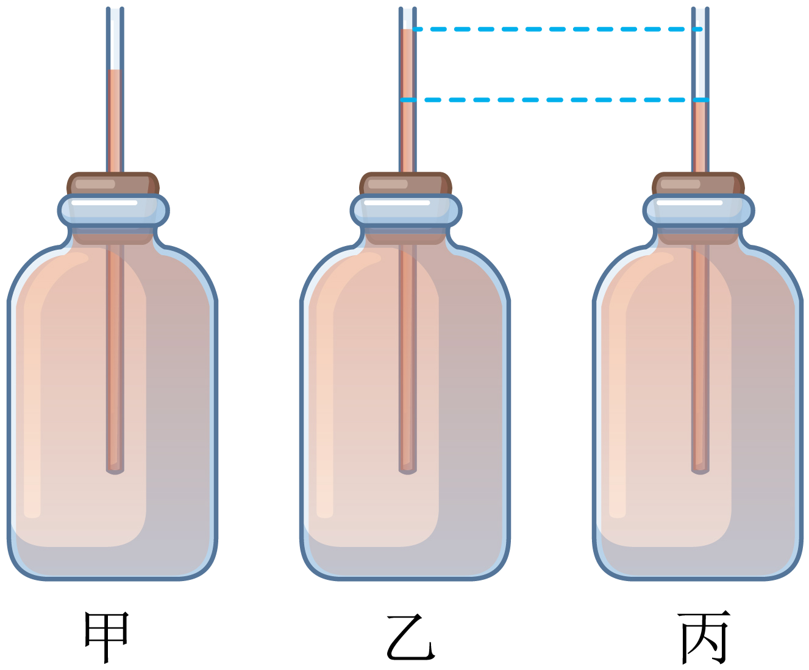

2023年北京中考物理 第18题 解析
18. 小强在小瓶里装满带颜色的水，在橡皮塞上插进一根细玻璃管，使橡皮塞塞住瓶口，这就做了一个简易温度计，如图甲所示。小强将简易温度计分别放入温度不同的水中，观察到细管中液面的位置如图乙、丙所示，则图________所反映的是放入温度较低的水中的情况。

【答案】丙
【解析】
【详解】小强自制的简易温度计是利用小瓶内水的热胀冷缩的规律工作的。当将此温度计放入温度较低的水中时，小瓶中的水因受冷而收缩，细管中的水柱下降，则细管中的液面比甲低，故图丙是放入温度较低的水中的情况。